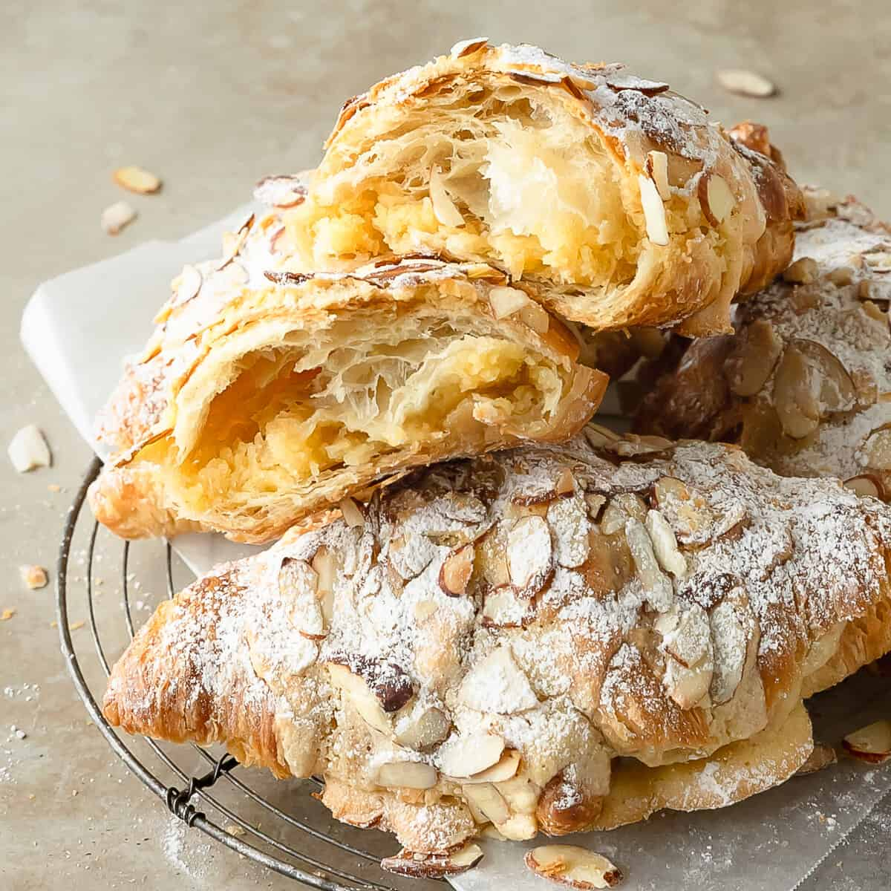
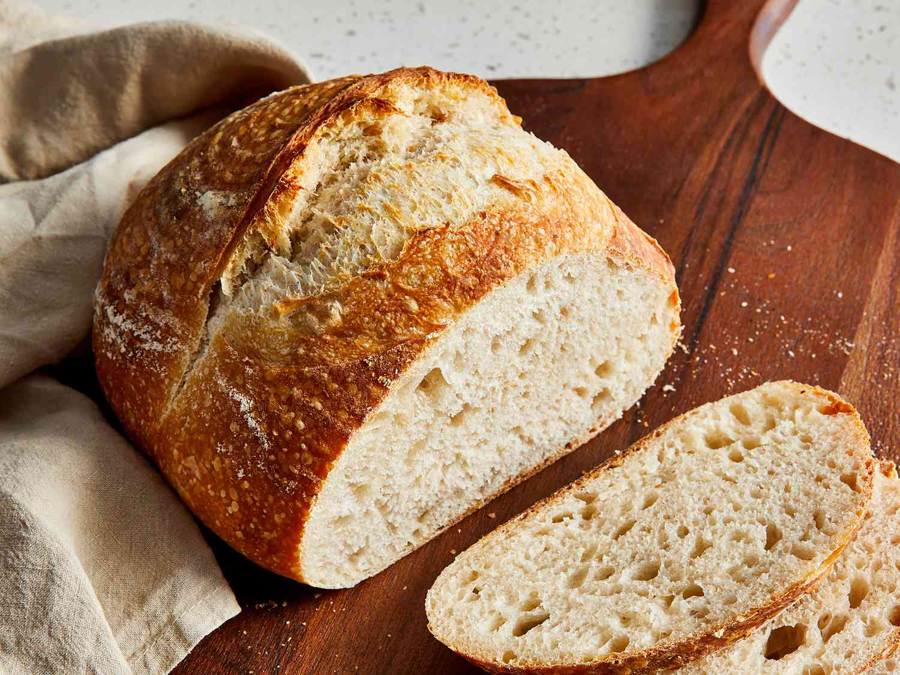
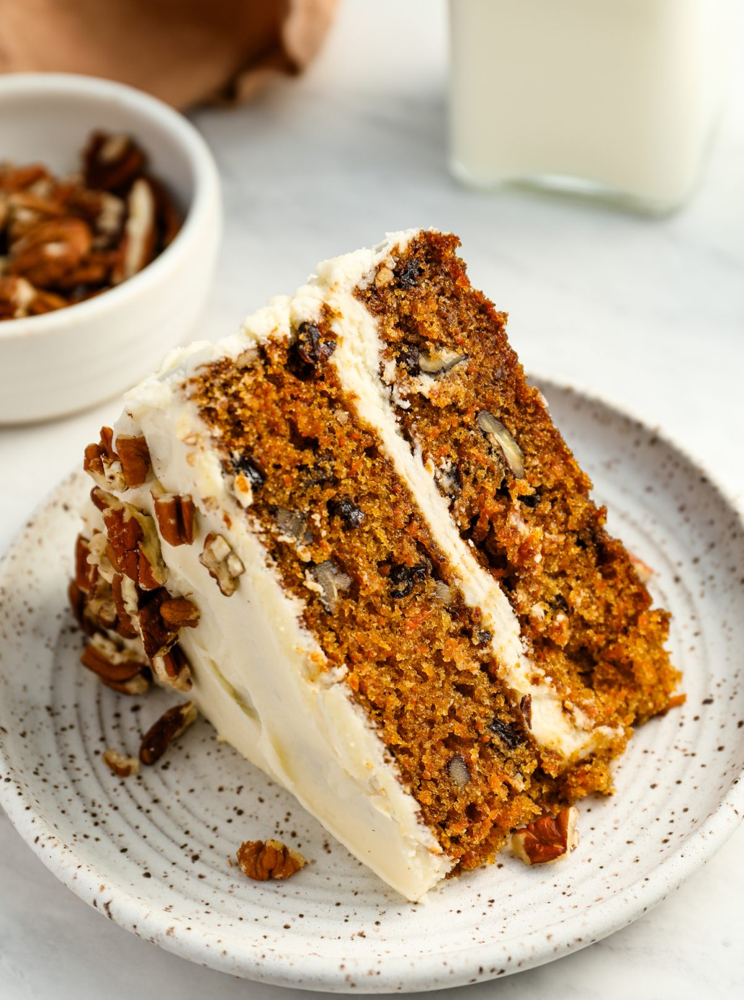

Denzel discovered his love for baking at the tender age of 10 when he baked his first batch of chocolate chip cookies with his grandmother. The joy of creating something delicious from scratch enthralled him. Over the years, he honed his skills by experimenting with various recipes and even creating some of his own. His dream is to share the Joy of baking with others and inspire them to create their own baked wonders.
A delicate pastry filled with the sweet nutty goodness of almond paste, dusted with powdered sugar, and baked to a golden perfection.

A community favorite, boasting a crusty exterior and a soft, airy interior, embodying the classic sourdough charm.

An homage to tradition and familial bonds, enriched with the natural sweetness of carrots and a cruch of walnuts, it holds a special place in his heart as it was his late grandfather's favorite. Every year on his grandfather's birthday, Denzel bakes this cake to honor his memory and the bond they shared over the love of baking.

"Denzel's sourdough is the best in town. It has the perfect crust and is always so fresh!"
"The almond croissants are a little bite of heaven. I can't get enough"